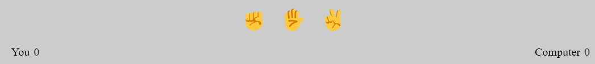
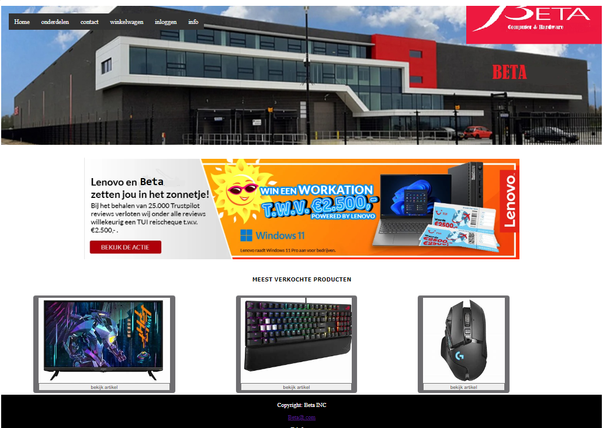

Over mij
Ik ben Azad Akin. Ik ben 18 jaar. en ik zit op het techniek college Rotterdam, de opleiding software development leerjaar 1. Mijn hobbies zijn voetballen, gamen en computer gerelateerde dingen. Ik vind het heel erg leuk om ict gerelateerde dingen te doen en ik sta altijd open om nieuwe dingen te leren.
Vaardigheden
Werkervaring
Studie
- Html en css
Website development - Javascript
Website Development - PHP
Website Development
- 2023 - heden
Allround medewerker bij de lidl
- 2022-heden
Software development leerjaar 2 leerzaam op het techniek college Rotterdam. - 2017-2021
Vmbo-kader diploma behaald.
De projection die ik heb gemaakt.
De Website
Je bekijkt nu de gemaakte website voor mijn portfolio.
De game
Ik heb gekozen voor de game Boter kaas en eieren, omdat ik dat in mijn jeugd erg leuk vond.
Webshop
Dit is de webshop BETA elektronica artikelen die ik had gemaakt tijdens Project 3..
Neem contact met mij op
azadakin26@gmail.com
31-0686439905
Download mijn CV